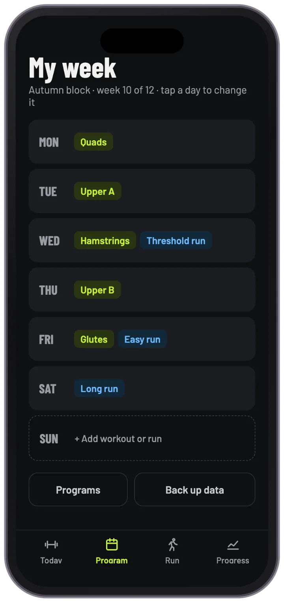
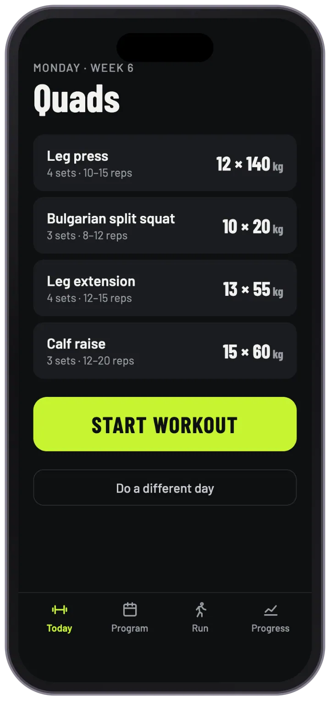
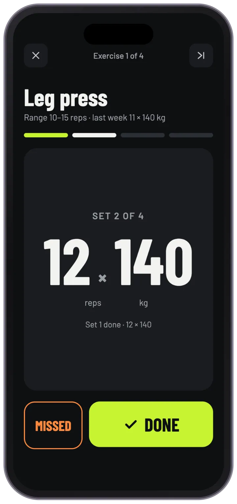
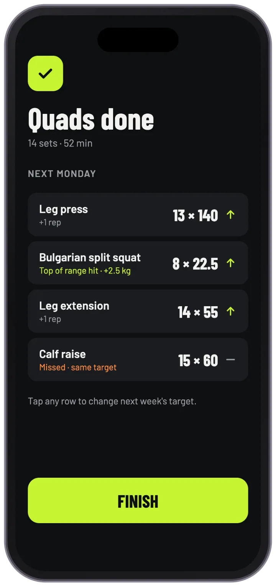
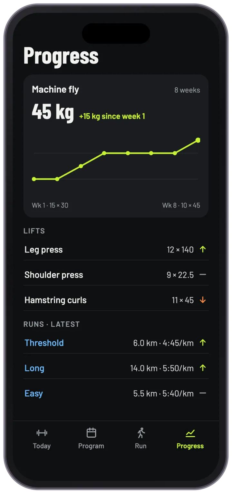

Gym Tracker: a workout log designed for the middle of a set
I swapped my workout spreadsheet for an app of my own, designed with AI: a mobile app that tracks my progressive overload at the gym, and my different run types and times.





01 — The challengeFrom spreadsheet to app
I lift, I run, and I was tracking all of it in a spreadsheet. So I decided to design my own app, with AI as my design partner.
I'm a gym girl and a runner, and I was logging every set and every run in a spreadsheet. It did the job, but a spreadsheet isn't made for the middle of a workout, and it couldn't show me at a glance whether I was getting stronger or faster. I wanted an app built around how I actually train: lifting and running in one place, with targets that move up as I progress.
Most of the time you spend in a gym app is the moment between sets: you glance at the phone, log what you did and get on with the next set. So I designed the whole app around that moment, then built the planning and progress screens around it.
Designing with AI
I also wanted to push how I use AI in my design process. I designed the app with Claude, Anthropic's AI assistant, using it as a design partner rather than a shortcut: I set the brief from my own training, directed each screen, and reviewed, challenged and refined what came back until the whole flow worked the way I train.
- I set the briefMy spreadsheet and my weekly routine became the requirements: what to log, how targets should progress, and how runs fit alongside lifting.
- Faster iterationAI let me explore and refine all 11 screens far faster than drawing each one from scratch, so I could spend my time on the decisions.
- My design judgementI stayed in charge of what to keep, what to change and how it should feel on the gym floor. AI sped up the making, not the thinking.
02 — ApproachDesign principles
- Readable at a glanceThe current set fills the screen: reps and weight in very large numbers, so you can read them from arm's length.
- One tap when it goes to planHit your target and you just press Done. Only a missed set asks for more: what you actually got.
- Progress built inYou set a rep range for each exercise. Hit the top of it and next week's weight goes up by the amount you've chosen for that exercise; otherwise the target goes up a rep, or stays the same after a missed set.
- Lifting and running togetherWorkouts and runs share one weekly plan and one progress screen, colour coded so they're easy to tell apart.
- Big targetsThe main buttons are 72 to 84 pixels tall and every control is at least 44 pixels, so they're easy to hit mid-workout.
03 — ScreensAt the gym
The core loop: see today's workout, log each set, and finish with next week's targets already worked out.
- Today Today's workout and each exercise's target, one tap to start.
- Active set The target fills the screen. Done is the big button; Missed sits beside it.
- Missed set Large plus and minus steppers to record what you actually lifted.
- Workout done Next week's targets, already updated, and why each one changed.
04 — ScreensSet up and track
Planning the week, editing workouts, logging runs and seeing progress over time.
- Weekly program The whole week at a glance. Tap a day to change it.
- Edit workout Add exercises with a set count, rep range, starting weight and how much the weight goes up.
- Log a run Fill in any two of distance, time and pace, and the app works out the third.
- Progress A chart for each lift, and arrows showing what's going up.
05 — ScreensPrograms and archive
Training runs in blocks of a few weeks. When one ends, it's archived with everything you logged, and the next can start from where you left off.
- Programs The current block and how far through it you are.
- New program Start fresh, or copy a previous block with its latest weights.
- Archive Compare blocks over the year, or search any exercise or run.
06 — Shipping itOn my phone, without an app store
I didn't want this to stay a set of mockups. Instead of going through the App Store or Google Play, I made it a progressive web app (PWA): a website that installs like an app. I added it to my phone's home screen, so it has its own icon and opens full screen, just like a native app, and it's what I use at the gym.
- No app storeNo review process or developer accounts. It goes straight from design to my phone.
- Instant updatesWhen I change something, the app on my phone picks it up the next time I open it. There's nothing to reinstall.
- One app, any phoneBecause it runs in the browser, the same app works on iPhone and Android.
07 — Visual designDark, bold and colour coded
A dark interface with one bright accent for each kind of activity. Numbers use Barlow Condensed, a tall, narrow typeface that keeps big figures readable without taking up the whole screen, with Barlow for everything else.
- Background#0E0F11
- Lime: lifting#C6F432
- Blue: running#6CBCFF
- Orange: missed#FF8A3D